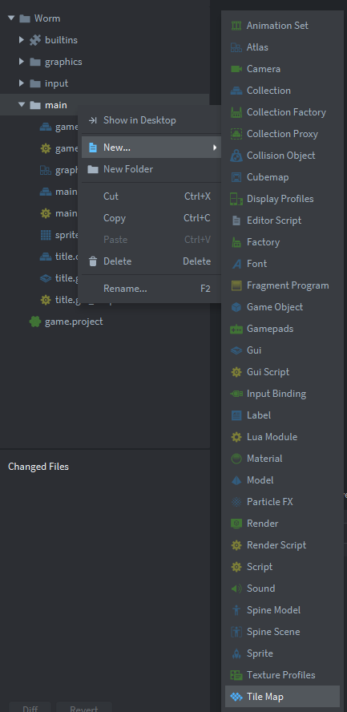
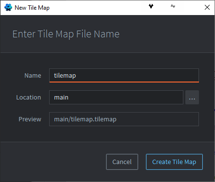
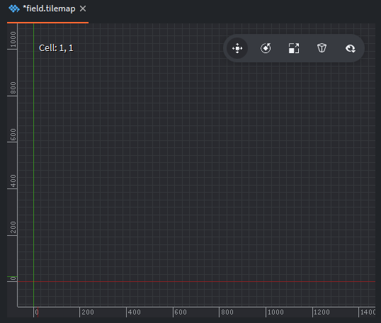
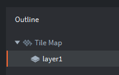
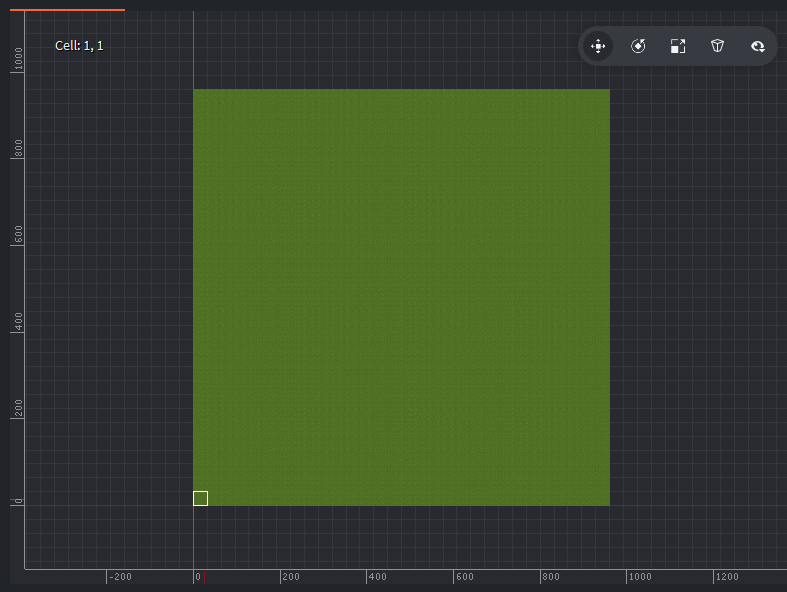
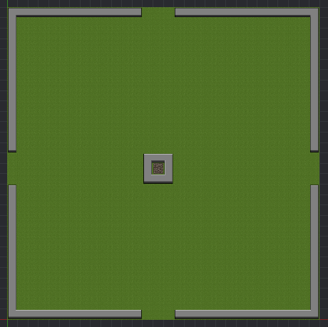

Tutorials for 2D games projects
Worm | Creating a tile map.
Now that we have the source for our tiles, we need to make the actual tile map for the game.
- In the assets panel, right click, 'main' and select, 'New...', 'Tile Map'.

- Name the Tile Map, 'tilemap' and click, 'Create Tile Map'.

- In the properties panel, set the 'Tile Source' property to, '/main/spritesheet.tilesource'. You can use the three dots to select the file.
- In the editor panel, zoom right out so that you can see all the individual squares of the tile map using your mouse wheel (or Alt-right mouse button, moving upwards if you don't have a wheel). You can hold the mouse wheel to reposition the canvas or alt-left mouse button). You will need to zoom out quite a lot.

Notice the origin of the game world where the green and red lines intersect. Also note the cell numbers in the left corner of the editor panel. These will help you orientate when you are making a game world.
We set our game world to be 960x960 pixels in the game.project settings file. Each of the tiles in the Tile Source is 32x32 pixels. Therefore 960/32 = 30. The visible part of our game world is 30x30 tiles. It it important to do these calculations before you create your graphics and map to ensure your playing area is the size you expect it to be.
- In the outline panel, select 'layer1'. Our game world can have multiple layers.

Notice how the mouse pointer in the editor window is now a piece of the green worm.
- Press the space bar to select a tile from the Tile Source. Select the tile that is just green grass.
- Click cell 1,1 where the red and green line intersect. Notice how it changes to grass. Now paint the 30x30 grid in grass upwards from the red line and to the right of the green line.
Make sure you have a layer selected to be able to lay tiles.
Click a layer in the outline panel to select which layer to draw on. If no layer is selected you won't be able to lay tiles.
Press [Space Bar] to toggle between the Tile Source and the Tile Map. Left click a tile to select it.
Hold the left mouse button to lay continual tiles.
To delete a tile press [Space Bar] to view the Tile Source. Select an area outside the tiles. Now lay this blank tile on the Tile Map.
You can copy larger areas by first selecting them by holding down Shift and selecting the area to copy. Release Shift. Now use the left button to lay the larger area. Cancel the copy by holding Shift and clicking the left mouse button.
Your editor panel should look like this:

You can make the game world more interesting by adding some wall tiles. We will code the worm to wrap around the playing area so there is no need to put wall tiles around the edge, but you may choose to.
- Complete your Tile Map however you like. We have included lots of different wall types you can use, but remember that the worm needs space to spawn and move! There is no need to put food or snake tiles on the map. We will do this dynamically in code later.

Now we need to attach our Tile Map to a collection so that it renders on the correct game world.
- In the assets panel, double click, 'game.collection'.
- In the outline panel right click, 'Collection' and select, 'Add game object'.
- In the properties panel change the 'Id' of the game object to, 'field'.
- In the outline panel, right click, 'field' and select, 'Add component file'.
- Add '/main/tilemap.tilemap'.
- Save the changes by pressing CTRL-S or 'File', 'Save All'.
- Run the program by pressing F5 or choosing, 'Debug', 'Start / Attach' from the menu bar. You should be able to select '1up' and see the Tile Map.

The next stage is to create a worm. Stage 4a >
 Craig'n'Dave | Version 1.3
Craig'n'Dave | Version 1.3